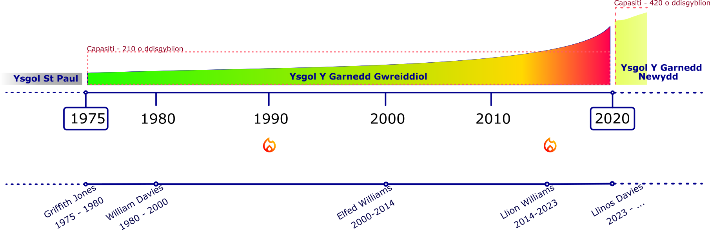

History
Demographic illustration by the author of this website
The fire symbol in the timeline represents two reported fires at the school: one around 1990 in the music room adjacent to the school hall, and another in 1995. Reference: North Wales Fire Service, June 2015.
The Establishment of Welsh-Medium Education in Bangor: From St. Paul to Y Garnedd
From Bebb's 1976 Thesis
In his 1976 University of Wales thesis, "Lle Sefydlu Ysgol Gynradd Gymraeg Bangor yn Natblygiadau Addysgol Cymru 1650-1953" (The Place of Establishing Bangor Welsh Primary School in the Educational Developments of Wales 1650-1953), Hywel Bebb documented the centuries-long struggle for Welsh-medium education and the establishment of the first Welsh-medium primary school in Bangor.
Bebb's research revealed a striking paradox in 1950s Bangor: while approximately 79% of the town's population spoke Welsh (8,486 Welsh speakers out of 12,151 people in 1951), the vast majority of Welsh-speaking children were being educated entirely through English. This linguistic and cultural disconnect became increasingly concerning to parents and educators who recognized the vital importance of education through the mother tongue.
The Birth of Welsh-Medium Education: 1953
Following meetings throughout 1952 and early 1953, led by key figures including Mrs. Eluned Bebb and supported by the educational philosophy of W. Ambrose Bebb, the Caernarfonshire Education Committee made a historic decision. In June 1953, they voted to convert Ysgol St. Paul into a Welsh-medium junior school—the first of its kind in Bangor's modern history.
Ysgol St. Paul was selected specifically because it had low pupil numbers, which meant the transition could happen with minimal disruption to Bangor's education system. The newly established "Ysgol Gymraeg" (Welsh School) opened on 1st February 1953 with 37 pupils. Parents of children already attending St. Paul were circularized and asked whether they wished their children to continue when it became a Welsh School. The school grew steadily: by 1955 there were 72 pupils, and by 1975 the number had reached 242 children.
The Move to Y Garnedd: 1975
As the Welsh school continued to grow, it eventually outgrew the St. Paul building. In 1975, the school moved to a new purpose-built facility and was renamed Ysgol Y Garnedd—the school that would serve the community until its demolition in recent years, when a new modern Ysgol Y Garnedd was opened to continue the legacy.
The Broader Significance
Bebb's thesis places this development within three centuries of Welsh educational history, from the "Brad y Llyfrau Gleision" (Treachery of the Blue Books) in 1847 through to the Welsh-medium school movement of the mid-20th century. The establishment of the Welsh school in Bangor was more than just a local achievement—it represented the culmination of generations of struggle to establish Welsh as a legitimate language of education and a vital step in ensuring the survival of Welsh language and culture for future generations.
Timeline:
- 1953: Ysgol St. Paul converted to Welsh-medium "Ysgol Gymraeg" (37 pupils)
- 1975: School grown to 242 pupils
- 1975: Moved to new building, renamed Ysgol Y Garnedd
- 2021: Original Ysgol Y Garnedd building demolished
- 2020: New Ysgol Y Garnedd opened
This summary is based on H.M. Bebb's 1976 thesis held at Bangor University.